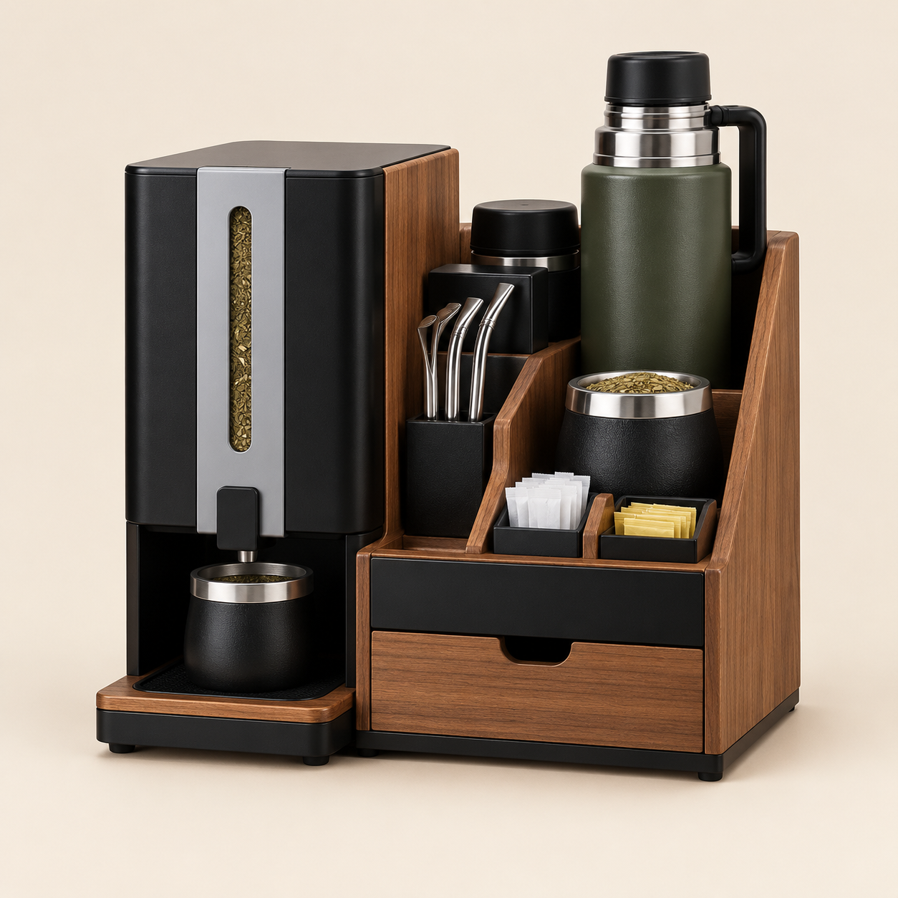

01
DISPENSER INTEGRADO ↗
La yerba, lista para servir.
El dispenser integrado ayuda a mantener la yerba a mano y facilita servirla en el mate sin desordenar todo el espacio.
Todo lo que necesitás para unos buenos mates, organizado en una sola estación. Menos vueltas, más momentos compartidos.

Mate Station reúne el dispenser de yerba y los accesorios de todos los días en un organizador compacto, práctico y con personalidad.
Dejá de buscar la bombilla, el azúcar o el mate. Prepará todo en un mismo lugar y hacé que tu rincón matero sea parte de tu casa.
Quiero saber más ↗Recorré los módulos y descubrí cómo cada espacio ayuda a tener el ritual listo para arrancar.
El dispenser integrado ayuda a mantener la yerba a mano y facilita servirla en el mate sin desordenar todo el espacio.
Un espacio dedicado para apoyar y tener el termo cerca.
Un lugar para dejar el mate entre cebada y cebada.
Guardalas juntas y evitá que queden sueltas por la mesa.
Un espacio para los sobres y esos detalles que cada uno elige.
Un módulo inferior para sumar espacio de guardado.
* La distribución y los accesorios incluidos pueden variar según la versión final del producto. Consultá antes de realizar tu pedido.
La franja del dispenser es el detalle que cambia el carácter de tu Mate Station. Elegí tu color favorito y mirá la vista previa.
¿Tenés otro color en mente?
Consultanos y vemos qué opciones podemos ofrecerte.
Elegí tu versión y contanos qué necesitás. Nos ponemos en contacto para confirmar disponibilidad, detalles y precio.
Seleccioná la franja que mejor combine con tu espacio.
Completá el formulario con tus datos y cualquier consulta.
Te contactamos para coordinar precio, entrega y disponibilidad.
Dejanos tus datos y la configuración que te gusta. Este formulario prepara tu solicitud de compra para que podamos seguirla.